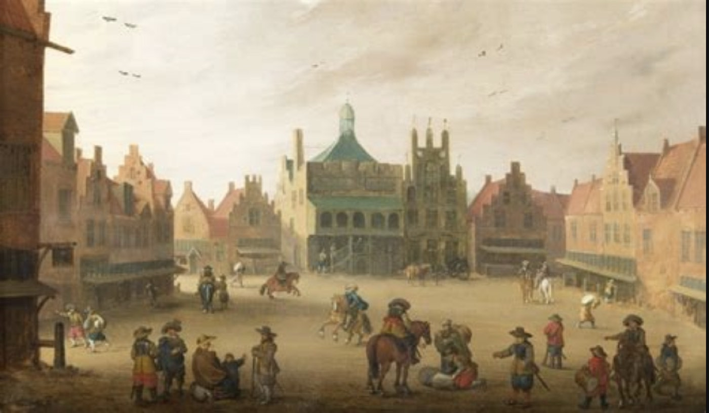

Voor scholen en docenten
Tijdspoort voor het onderwijs
Tijdspoort onderzoekt hoe de historische publieksbeleving kan bijdragen aan onderwijs over geschiedenis, lokaal cultureel erfgoed en maatschappelijke reflectie. Het aanbod is nog in ontwikkeling.
Wat beschermt ons nu?

Wat scholen en docenten kunnen verwachten
De historische ervaring kan een rijke aanleiding zijn om met leerlingen te praten over veiligheid, vertrouwen, verdeeldheid en de waarde van de stad.
Geschiedenis en erfgoed
De beleving draait om de geschiedenis van Amersfoort in 1787, het lokale cultureel erfgoed en de spanningen tussen patriotten en orangisten.
Burgerschap en reflectie
Leerlingen kunnen in gesprek gaan over wat mensen een gevoel van veiligheid geeft, hoe vertrouwen wordt opgebouwd en hoe verdeeldheid politieke spanningen kan versterken.
Actief leren
Digitale vertelvormen en virtual reality kunnen een actieve en onderzoekende manier van leren ondersteunen, met de historische locaties als vertrekpunt.
Toekomstig aanbod
In gesprek met scholen en docenten
Het onderwijsaanbod is nog in ontwikkeling. Tijdspoort komt graag in gesprek met scholen en docenten om te onderzoeken welke begeleiding en aanvullend lesmateriaal waardevol kunnen zijn.
Definitieve programma’s, groepsgrootte, duur, beschikbaarheid en verdere uitwerking worden later gepubliceerd. De kern van de aanpak blijft helder: geschiedenis beleefbaar maken en de vraag “Wat beschermt ons nu?” ook in het onderwijs bespreekbaar maken.
Als je wilt, kunnen we later in de ontwikkeling ook meer uitwerken op welke manier de ervaring aansluit bij lesinhouden of leerdoelen.